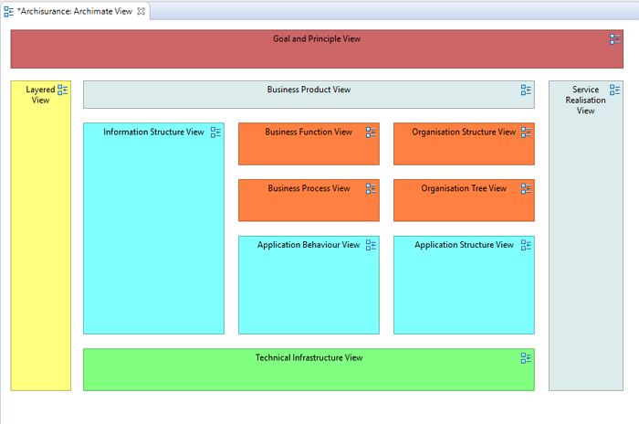

A View Reference figure acts as a link to another View from within a View. It's a shortcut that when double-clicked opens the linked View.
To add a View Reference drag a View node from the Tree Model onto the canvas of the target View. Note that you cannot reference the same View from itself. The following screenshot shows how the user has created a "Map" View with View References to all the other Views in the model:
Adding View References to create a "Map" View
The visual properties of the View Reference figure can be set in the Properties Window.